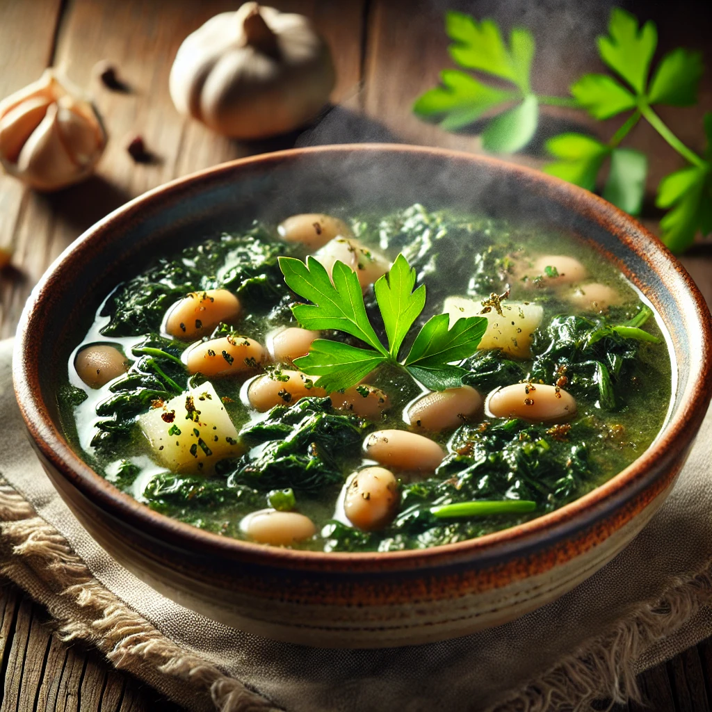

Home
Bkeila

Description
Bkeila is a traditional Tunisian dish made with spinach and spices. It is often served with bread or as a side dish.
The rich flavors and aromatic spices make it a favorite in Tunisian cuisine.
Ingredients
- Spinach
- Olive oil
- Garlic
- Harissa
- Salt
- Pepper
Steps
- Wash and chop the spinach.
- Heat olive oil in a pan and sauté the garlic.
- Add the spinach and cook until wilted.
- Stir in harissa, salt, and pepper to taste.
- Cook for a few more minutes until the flavors are well combined.